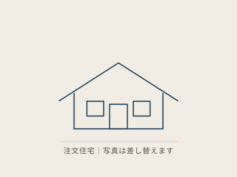
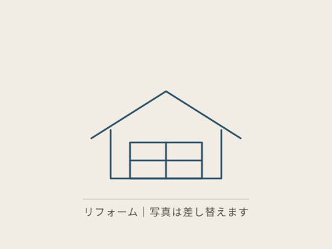

施工事例
三条・燕エリアで手がけた家とリフォームです。写真はすべて自社施工の実物。近い雰囲気の事例があれば、相談のときに「これに近い」とお伝えください。話が早くなります。
※掲載写真はサンプルです。実際の施工写真に差し替えます。お客様のお名前は掲載していません。

築30年の水回りを一新
共働き家族の家事動線
寒い廊下の断熱改修
二世帯の程よい距離
和室を洋室に
※上記の事例名は方向性の仮置きです。実際の施工内容に差し替えます。
三条・燕エリアで手がけた家とリフォームです。写真はすべて自社施工の実物。近い雰囲気の事例があれば、相談のときに「これに近い」とお伝えください。話が早くなります。
※掲載写真はサンプルです。実際の施工写真に差し替えます。お客様のお名前は掲載していません。


※上記の事例名は方向性の仮置きです。実際の施工内容に差し替えます。